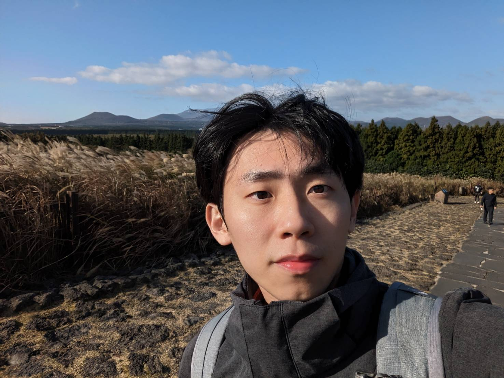

個人簡介
我是一位熱愛挑戰和追求卓越的嘉義人，出生於1997年，成長於一個家庭中，我們尊重並重視習慣的重要性。從小，我就培養了主動幫助家裡做家事的習慣。閱讀是我的興趣之一，因為我相信書籍像一個人的人生，可以從中獲得許多他人的經驗和智慧。我也熱愛旅遊和挑戰極限運動，這些活動豐富了我的視野，讓我對事物有更多不同的看法與見解。此外，我喜歡烹飪，我相信自己動手做出來的東西才是真正的學習與成長，很希望能夠加入
WeHelp，轉職成為網站工程師。

為了成為軟體工程師，做過什麼努力？若有具體作品請分享給我們。
我是彭彭，很希望能夠加入 WeHelp，轉職成為網站工程師。
如果參與這個訓練，會怎麼安排學習時間？
目前先以第一階段：網站開發基礎試做時間安排。
| 週一至週五 | |||
| 上午（9:00 - 12:00） | 中午（12:00 - 13:00） | 下午（13:00 - 16:00） | 下午（16:00 - 18:00） |
| 自主學習 HTML、CSS、JavaScript 的基礎知識，通過線上基礎教學影片進行學習。 | 午餐休息，放鬆一下大腦。 | 深入學習 Python 的基礎知識，包括語法、資料結構、函式等。同時開始瞭解 FastAPI 相關內容，可以參閱官方文件進行學習。 | 鞏固學習內容，實踐編程，完成相關練習和小型專案，特別是前端相關的 RWD 網頁切版及 JavaScript 的應用。 |
| 周末 | |||
| 上午（9:00 - 12:00） | 中午（12:00 - 13:00） | 下午（13:00 - 16:00） | 下午（16:00 - 18:00） |
| 參與每週一早上 10:00 的線上會議，聽取當週的任務安排和關鍵技術指導，並準備撰寫進度報告。 | 午餐休息。 | 根據會議內容和任務安排，開始進行相關技術的實作和學習。例如，使用 FastAPI 架設伺服器，學習如何串接 MySQL 資料庫。 | 準備進度報告，整理本週的學習成果和任務完成情況。 |
| 其他注意事項 | |||
| 每日進度報告： 每天晚上至少撰寫一次進度報告，記錄當天的學習內容、遇到的問題和解決方案，以及明天的計劃。 線上討論和提問： 每週參與 Discord 社群平台的討論和提問，與其他學習者和導師交流心得和疑問。 實體活動： 定期參與期末讀書報告活動和轉職經驗分享，透過線上直播參與。 進度查核： 每週至少提供兩次每日進度報告，並在學期結束前完成所有任務，通過檢查後方可進入下一階段的訓練。 |
|||
是否有想要加入的公司？為什麼想加入該公司？
我是彭彭，很希望能夠加入 WeHelp，轉職成為網站工程師。
請描述一件產生明顯負面情緒的經歷，如何處理該情緒？
我是彭彭，很希望能夠加入 WeHelp，轉職成為網站工程師。
關於這份申請網頁，分享一個開發時的技術心得。
起初我對於程式語言真的是一知半解，有些時候看一看還是搞不懂他的邏輯，但隨時一步一步地進行，最終完成自己網頁頁面的時候頗有成就感，甚至想要再去精進改善它，希望能讓人看起來排版更加流暢更加美觀，雖然以業內人士看起來可能只是一個簡易的網頁，但對我本身也是出發的一大步。
請用簡短兩三句話，描述對你而言，最重要的一項人際交往原則。
相互原則:維持自己的底線，尊重他人的想法，並保持著一定的同理心。
其他想要對我們說的事情？
我是彭彭，很希望能夠加入 WeHelp，轉職成為網站工程師。